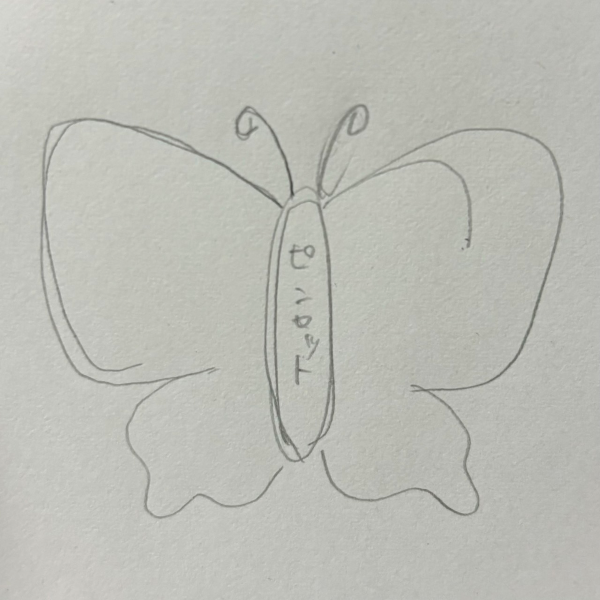
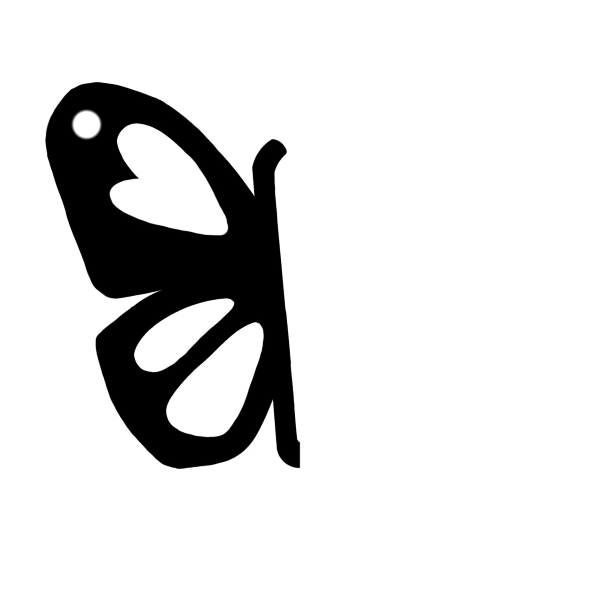
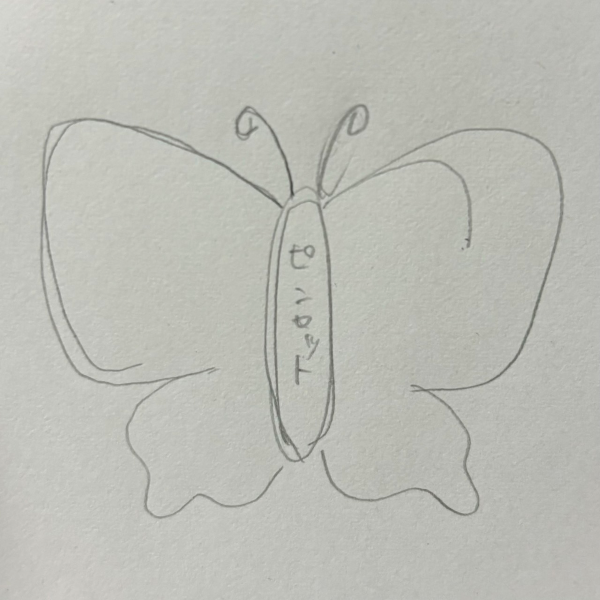
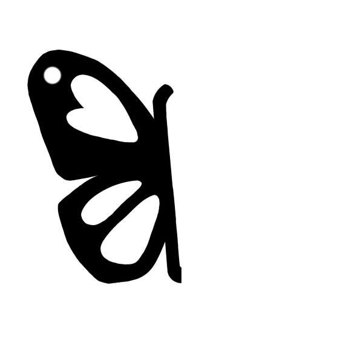
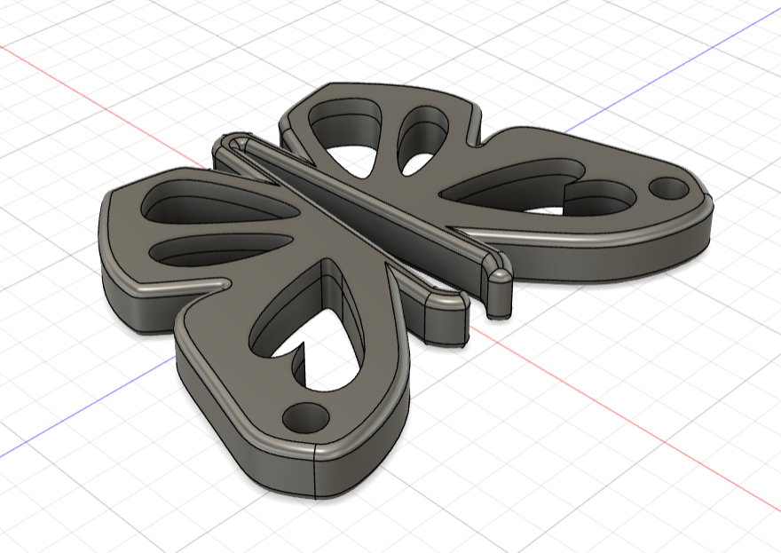
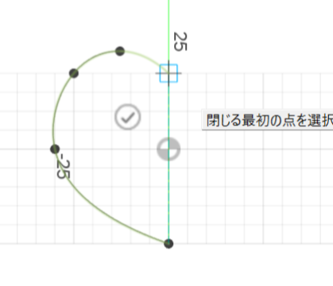
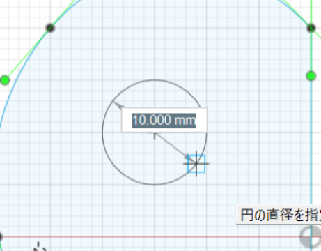
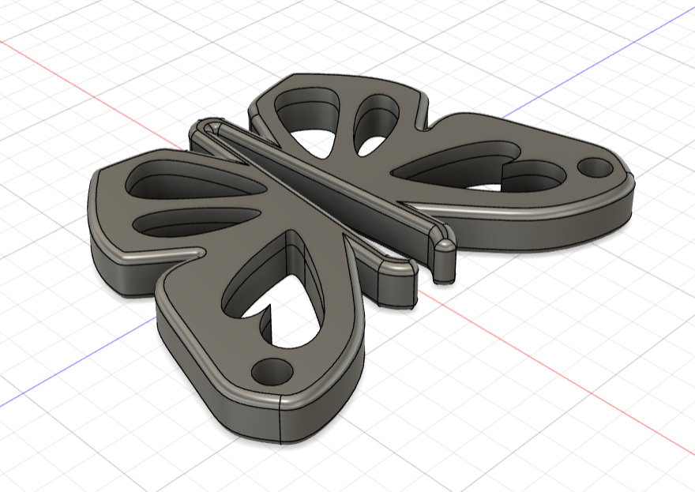
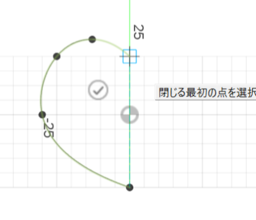
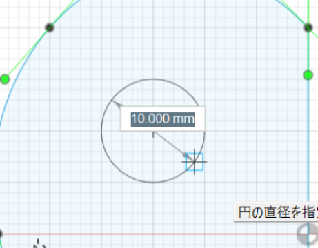

Butterfly tweezers
完成品✨↓


（この二つは少し大きさを変えたもの）
キラキラのラメシールを貼ったらかわいくなるかなと思ってつけてみた。

一回目に作った作品はピンセット部分がとても小さくあまり実用的ではなかった。
デザイン性もなかったため羽の部分をくりぬいて模様をつけ、
羽の側面も丸くして自分好みのデザインにした。
穴が開いている部分に金具をつけるとキーホルダーになる。
ストーリーボード↓

作品説明
蝶々型のキーホルダーピンセット。
普段はキーホルダーとして使え、必要な時に取り外して使える。
平らな設計のため、あまり邪魔にならない。
角を丸くしたため、物を挟むときに指が痛くならず使いやすい。
なぜ作ろうと思ったのか
ピンセットは欲しい時に限って持っていなかったり、あまり持ち歩く場面がないため、身に着けて持ち運べるデザインが良いと考え作った。
身に着けるときにピンセット感が強くならないようにかわいいデザインで作った。
スケッチ↓

↑このスケッチ画像をスマホに読み込んでスマホアプリで編集し、
その画像をfusionに読み込んで作成した。

STLファイル①
STLファイル②
（↑作品の向きや大きさはcuraの編集で調整している）

↑このスケッチ画像をスマホに読み込んでスマホアプリで編集し、
その画像をfusionに読み込んで作成した。

STLファイル①
STLファイル②
（↑作品の向きや大きさはcuraの編集で調整している）
作成過程↓
これはフィレットで角を丸くする工程をした直後のもの
羽の中の模様部分は大きさの関係でフィレットが使えない箇所があったため外側のみ使用した。

①線分
自由に線を引いて形を作ることができる。点と点がつながっていないとうまくいかないので注意。

②円
中心を決めて、数値入力もしくは自分で半径の長さを調節して円を作ることができる。

③押し出し
面積を選択して、数値入力もしくは矢印を引っ張て、立体にすることができる。

④ミラー
反転させたいものを選択し、対称面を選択すると左右対称の物体を作ることができる。

⑤フィレット
丸くしたい個所を選択して、角を丸くすることができる。

これはフィレットで角を丸くする工程をした直後のもの
羽の中の模様部分は大きさの関係でフィレットが使えない箇所があったため外側のみ使用した。

🦋作成で使用した機能🦋
①線分
自由に線を引いて形を作ることができる。点と点がつながっていないとうまくいかないので注意。

②円
中心を決めて、数値入力もしくは自分で半径の長さを調節して円を作ることができる。

③押し出し
面積を選択して、数値入力もしくは矢印を引っ張て、立体にすることができる。
④ミラー
反転させたいものを選択し、対称面を選択すると左右対称の物体を作ることができる。
⑤フィレット
丸くしたい個所を選択して、角を丸くすることができる。